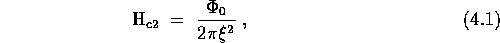
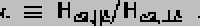
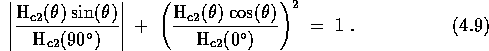
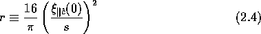

Anisotropy effects are fundamental to superconductivity. This is true because any non-cubic material that can be grown with sufficient structural perfection should show some anisotropy in its superconductivity. Even cubic materials can show deviation from isotropic models of superconductivity if they have non-spherical Fermi surfaces.[33] Thus, as pointed out by Dalrymple,[50] just about all crystalline superconductors are in principle expected to show some anisotropy effects. Clearly these effects are more important in some materials than in others, and the materials at the high-anisotropy end of the continuum are more interesting for comparison with GIC's.
At the weakly anisotropic end of the continuum are bulk transition metals like Nb, V, and Tc. These materials are three-dimensional anisotropic superconductors characterized by different superconducting coherence lengths in different crystallographic directions. The Pippard coherence length xi0, is defined to be the approximate spatial extent of the Cooper pairs. From an uncertainty-principle-type argument by Pippard,[252] this extent must be approximately hbar/Deltap = hbar vF / kB Tc. This relationship shows the connection between the Fermi surface and superconductivity.
In the Ginzburg-Landau theory of superconductivity (discussed further in Sections 4.1 and 4.5) a more generalized coherence length xi is defined. This Ginzburg-Landau coherence length is related to the upper critical field for a bulk type II superconductor by

where ø0 is the superconducting flux quantum.[252] An angle-dependent coherence length therefore gives an anisotropic critical field. When a superconductor has uniaxial symmetry, two of its three pricipal coherence lengths are the same. (In the most general case, all three coherence lengths may be different.) Then the angular dependence of Hc2 is given by the simple expression:[127,175]
where epsilon is the critical field anisotropy
parameter of Morris, Coleman and Bhandari,[175], defined by:

Except for this angular dependence of Hc2, these weakly anisotropic superconductors behave for the most part like isotropic type II superconductors. For example, the temperature dependence of their critical fields is given by the usual Werthamer-Helfand-Hohenberg-Maki theory.[54] This theory gives a linear temperature dependence near Tc and saturation at lower temperatures. Linear behavior of Hc2 implies because of Eqn. 1 that xi goes as (1 - t)-1/2.
Besides bulk anisotropic superconductors like some of the transition metals, there is another familiar class of materials with anisotropic superconducting properties. This is the class of superconducting thin films, which were the first anisotropic superconductors to be studied.[250,32] When the thickness of a film is less than the coherence length, the Cooper pairs can only interact with their neighbors in the plane of the film. In this case, the film is commonly referred to as a two-dimensional superconductor because the Cooper pairs only interact in two directions.
As might be expected, the lowering of the effective dimensionality of a superconductor from three to two dimensions has important and measurable consequences. These consequences stem from the fact that the length scale for superconductivity in the direction perpendicular to the film is now the film thickness rather than the coherence length. Most of the expressions that describe thin-film superconductors can be derived simply by replacing one of the coherence lengths in Eqn. 1 by the film thickness, plus some numerical factors. For example, consider the critical fields of a thin film. When the external field is applied along the perpendicular to the film, Eqn. 1 still holds. However, for a field applied in the plane of the film, the critical field for a thin film is now Hc2, _|_ ^c = sqrt3ø0 / pi xi d, where d is the film thickness.[252] From the (1 - t)-1/2 temperature dependence of xi given above, one can immediately see that Hc2, _|_ c will have a square-root temperature dependence: Hc2 proportional to (1 - t)1/2.[250,104]
The square-root temperature dependence is one of the hallmarks of two-dimensional superconductivity. The other is an angular dependence of the critical field given by Tinkham's formula:[250]

where Hc2(0°) = Hc2, || c and Hc2(90°) = Hc2, _|_ c. The angle theta is defined in Figure 4.6. The square-root temperature dependence and Tinkham's formula for the angular dependence have been observed many times in thin films. What is more surprising is that these two-dimensional properties have also been observed in bulk superconductors which have a layered structure. Rigorous calculations for a multilayer structure composed of superconducting and insulating planes have been performed by Klemm, Luther and Beasley.[131] The KLB calculations show that a dimensionality crossover is expected to occur at a finite temperature when the parameter r is less than 1.7,[131] where r is defined by

The temperature at which the decoupling of the superconducting planes occurs occurs is called T*. T* is approximately defined by xi|| c(T*) = d. Usually layered superconductors show 3D anistropic superconductivity like the bulk transition metals, but sometimes they show 2D superconductivity like thin films, and sometimes they even show entirely new effects. Below, the portion of the work on the upper critical fields of layered superconductors which is most relevant to the GIC experiments is briefly reviewed.